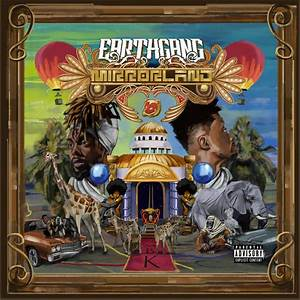

DREAMVILLE"S VERY OWN: EARTHGANG

This weeks Music Spotlist is on EARTHGANG, a hip-hop duo from Atlanta, GA who are apart of the Dreamvile colleactive and Label.
Formed in 2008, EarthGang released their first EP(Extended Play Album), 'The Better Party', in 2010. This was followed by several singles and two mixtapes titled, Mad Men and Good News back in 2011. In 2013, the duo released their debut album Shallow Graves For Toys and was largely well-received, with Noisey calling it "one of the most well thought-out releases of the year (2013)". Their sophomore album titled "Strays with Rabies", was released to more positive reviews in 2015. After signing to J. Cole's Dreamville Records, EarthGang released a trilogy of EPs: Rags, Robots, and Royalty, leading up to their major label debut album, Mirrorland whaich was released Sept 6, 2019